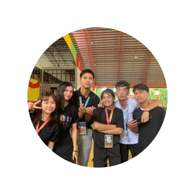
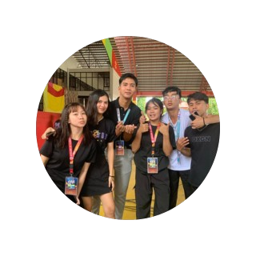

friends
.png)
She's a mysterious blend of unpredictability and talent. Often absent with a whirlwind of excuses, from a string of illness to navigating a jealous boyfriend's whims. Despite the drama, she's an undeniable talent, seamlessly dancing through life's hurdles while serenading everyone with her melodious voice. A spender of her resources, she's somehow also a keen observer, always at the heart of gossip. Behind the chaos lies someone multifaceted, offering a unique blend of drama and artistry that's both perplexing and enchanting.
She's the epitome of innocence, her appearance pristine with an aura of pure innocence and fair complexion. Always armed with her makeup set, she delicately touches up her lipstick with precision, a constant companion to her impeccable facade. Yet, beneath that seemingly demure exterior lies a different dimension-a penchant for gossip and an unexpected AI boyfriend. Her intelligence shines through in unexpected ways, especially in her mastery of online games, a skill that contrasts sharply with her perceived innocence, adding layers to her fascinating persona.
.png)
.png)
He's a whirlwind of contradictions, a guy whose list of flings seems endless, living an extravagant life while being the loudest presence in any room. Towering above others, he relishes the spothlight, always the center of attention with his brash and often rude demeanor, complemented by his flirtatious nature. Despite this, there's an unexpected layer to him - beneath the bravado lies a protective instinct, fiercely guarding those he cares about. Surprisingly intelligent, he navigates conversations with wit and sharpness, a trait that often catches people off guard amid his otherwise bold and sometimes inappropriate behavior.
He's the friendliest guy around, especially with his female friends, often hugging them so warmly that it seems like he forgets he has a girlfriend. his frugality shines through, always watching his expenses. A constant in the gossip circle, he's the one eager for details, asking numerous questions, yet during exams, he can't resist glancing at answer sheets. However, hidden beneath these quirks is a creative genius - his photography, filming, and video editing skills are remarkable. His talent in capturing moments and crafting stunning visuals is a stark contrast to his otherwise curious and occasionally inappropriate behavior.
.png)
He's a guy of many personas, often labeled as looking like an addict, a theif, like having a disease due to his appearance. His attendance dwindless since he got a girlfriend, occasionaly appearing in class. Amidst this, he's known to engage with his co-officers and has a reputation for thievery. Despite these complexities, he stands as a shield fir his friends, especially protective of his female companions. Underneath it all, he possesses intelligence that sets him apart.
Friends are the stars that brighten life's sky, and among them, there's a constellation that stands out-each friend a unique light, painting the canvas of my life with vibrant hues of laughter, support, and shared moments. Their presence brings warmth to the coldest days and adds joy to the simplest of moments. With each, there's a unique melody of memories, woven together through adventures, shared secrets, and unwavering support. Through thick and thin, these friends are the anchors, grounding me in storms and celebrating with me in moments of triumph. They're not just companions but a cherished part of the story I call life.

